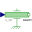

ComparisonQuasiStaticSlow forced armature motion of both solenoid models so that electromagnetic field and current are quasi-static |
|
Diagram
{kind=link}
Information
This information is part of the Modelica Standard Library maintained by the Modelica Association.
Have a look at SolenoidActuator for general comments and at SimpleSolenoid and AdvancedSolenoid for a detailed description of both magnetic network models.
Similar to static force-stroke measurements on real actuators, the armatures of both actuator models are forced to move slowly here. Hence, the dynamics of the electrical subsystems due to coil inductance and armature motion can be neglected and the static force-stroke characteristics are obtained. To illustrate the accuracy to be expected from the lumped magnetic network models, results obtained with stationary FEA are included as reference (position-dependent force, armature flux and actuator inductance). Note that these reference values are valid for the default supply voltage v_step=12V DC only!
Set the tolerance to 1e-7 and simulate for 10 s. Plot in one common window the electromagnetic force of the two magnetic network models and the FEA reference vs. armature position x_set.y:
simpleSolenoid.armature.flange_a.f // electromagnetic force of simple magnetic network model advancedSolenoid.armature.flange_a.f // electromagnetic force of advanced magnetic network model comparisonWithFEA.y[1] // electromagnetic force obtained with FEA as reference
Electromagnetic or reluctance forces always act towards a decrease of air gap lengths. With the defined armature position coordinate x, the forces of the models are negative.
The magnetic flux through the armature and the actuator's static inductance both illustrate the differences between the two magnetic network models. Similar to the forces, compare these quantities in one common plot window for each variable (plot vs. armature position x_set.y):
simpleSolenoid.g_mFeArm.Phi // magnetic flux through armature of simple magnetic network model advancedSolenoid.g_mFeArm.Phi // magnetic flux through armature of advanced magnetic network model comparisonWithFEA.y[2] // magnetic flux obtained with FEA as reference simpleSolenoid.coil.L_stat // static inductance of simple magnetic network model advancedSolenoid.L_statTot // series connection of both partial coils of advanced network model comparisonWithFEA.y[3] // static inductance obtained with FEA as reference
As mentioned in the description of both magnetic network models, one can tell the higher armature flux and inductance of the advanced solenoid model at large air gaps compared to that of the simple model. The effect of this difference on dynamic model behaviour can be analysed in ComparisonPullInStroke.
Parameters (1)
| v_step |
Value: 12 Type: Voltage (V) Description: Applied voltage |
|---|
Components (10)
| x_set |
Type: Ramp Description: Prescribed armature position, slow enforced motion from x_max to x_min |
|
|---|---|---|
| advancedGround |
Type: Ground |
|
| advancedSource |
Type: StepVoltage |
|
| advancedSolenoid |
Type: AdvancedSolenoid |
|
|  | advancedFeed_x |
Type: Position |
| simpleGround |
Type: Ground |
|
| simpleSource |
Type: StepVoltage |
|
| simpleSolenoid |
Type: SimpleSolenoid |
|
| simpleFeed_x |
Type: Position |
|
| comparisonWithFEA |
Type: CombiTable1Ds Description: Valid for u_source=12V only; column 1: position, col.2: force, col.3: armature flux, col.4: inductance |